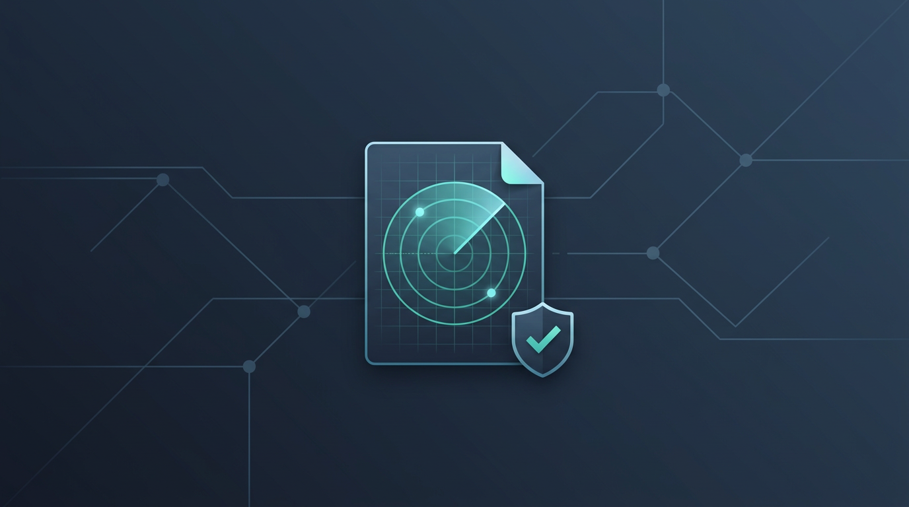

BioBio
I’m a web developer who got started just before the Web 1.0 era in the Washington, DC area, when “webmaster” meant doing whatever it took to keep a site running. I’ve always worked as a generalist across front-end and back-end technologies to keep systems reliable and responsive.
After about ten years in the field, I stepped back and spent time abroad, including twelve years in Berlin, staying connected to technology through activist.org and personal projects. I’m now back in the DC area, re-engaging with development work and rebuilding a local tech network.
I’m interested in roles where I can apply my experience in building and maintaining web applications, integrating APIs, and improving codebase reliability and performance—now including workflows that use agentic coding and AI-assisted development—while contributing to teams that value initiative and collaboration.
Web developer with experience dating back to just before the Web 1.0 era in the Washington, DC area, when “webmaster” often meant handling everything needed to keep a site running.
After around ten years in the field, there was a period abroad, including twelve years in Berlin, staying connected to technology through activist.org and personal projects. Recent work has shifted back to the DC area, with renewed engagement in development and the local tech community.
Current interests center on roles that use experience with reliable, API-driven web applications and agentic or AI-assisted workflows in collaborative teams.
portfolioPortfolio
Hover over / click on the images for more info.

Filescan
- Scans image uploads for malware.
- Stops unsafe files before app processing.
- Scans for malware.
- Blocks unsafe files.
Filescan

Activist.org
- Connects activists to organizations and causes.
- Makes civic participation easier.
- Links activists to causes.
- Improves participation.
Activist.org

ServePoint
- Manages citizen-service cases securely.
- Supports reliable public-service delivery.
- Tracks service cases.
- Supports secure delivery.
ServePoint

Carbon Interface API Frontend
- Estimates travel emissions.
- Supports lower-impact choices.
- Estimates emissions.
- Supports greener travel.
Carbon Interface API Frontend

create-flask-app
- Scaffolds Flask apps via CLI.
- Reduces setup boilerplate.
- Generates Flask starters.
- Cuts setup boilerplate.
create-flask-app

Solar Panel Output Estimation
- Forecasts solar energy output.
- Supports better energy planning.
- Forecasts solar output.
- Aids energy planning.
Solar Panel Output Estimation

GreenShop / E-commerce UI
- Sells sustainable products.
- Demonstrates checkout flow.
- Sells sustainable goods.
- Shows checkout flow.
GreenShop / E-commerce UI

E-commerce REST API
- Handles products, orders, and auth.
- Keeps transactions reliable.
- Runs products and orders.
- Keeps transactions stable.
E-commerce REST API
NestJS REST API Template
- Scaffolds NestJS APIs quickly.
- Reduces backend setup time.
- Starter for NestJS APIs.
- Cuts setup time.
NestJS REST API Template
Resonate Music Streaming Service
- Supports open-source streaming.
- Improves reliability with tests.
- Supports music streaming.
- Improves stability.
Resonate Music Streaming Service

Skill SummarySkill Summary
Frontend
- React
- Angular
- Vue
- Nuxt
- TypeScript
- JavaScript
- HTML/CSS
- AJAX
- jQuery
- OOP
Backend / API
- Node.js
- Nest.js
- Django
- DRF
- Flask
- ColdFusion
- CFML
- CFC
- ColdBox
- Fusebox
- Mach II
- Sequelize ORM
- TypeORM
- PostgreSQL
- SQL Server
- SQL
Other
- GitHub/Git
- GitHub Actions
- VS Code
- Docker
- API integration
- CI/CD pipelines
- AI-assisted development
- Agentic coding workflows
Other InfoOther Info
Work Info
- Available for contract / free-lance work
- Full and/or part-time possible
- Open Source contributor
- U.S. citizen
- Eligible for Public Trust
- Experience with U.S. federal agencies (NRC, FAA, US Army JAG, US Border Control)
Areas of capability
- Web Application Development
- API Development and Integration
- Database Design and Implementation
- Legacy system modernization
- Test-driven development and QA
- Open source collaboration
- CI/CD and deployment workflows
Certifications & Education
- Adobe ColdFusion Professional Certification
- Codecademy Full Stack Engineer Career Path
- BMus with Honors, Virginia Commonwealth University
Languages
- English (Native)
- German (B2 Deutsch für Beruf / Professional level B2)